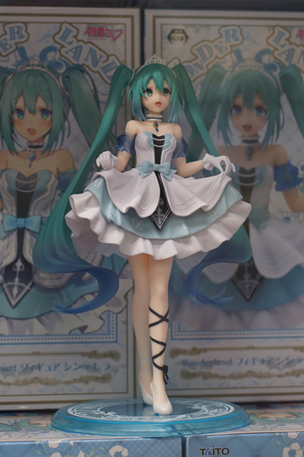
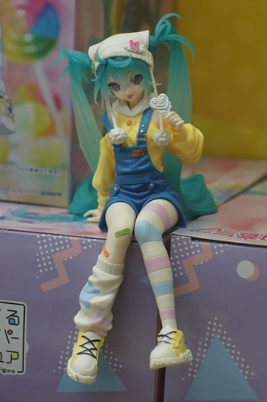

Inktober is killing me!!! I read the rules to inktober because everyone on Drawing Website dot Com is doing it, and found out that you don't need to use ink at all for it?! I'm not sure what kind of modern day bs is going on, but I decided I want to try mangaka studies this month and using the g and maru nibs. The pencil to copy these mangaka takes a serious amount of time, and inking on top of that takes almost the same amount!
Inking something you took at least an hour on drawing is terrifying. I was trying to do quick strokes with my earlier ones, but I'm starting to be able to convince myself that pressure and not speed will control the line thickness, so I can ink much slower.

Kohi and I attended MochiPop Con! Please check out my report of the convention!
After the con closed, Kohi asked if I wanted to go to Round 1 in Puyallup. I haven't been to this one, only the Tukwila one, and even that was almost 10 years ago.
She immediately found the creature possibly known as momonaga and watched as a group of people failed to obtain him.
Her card was empty, so we then ran over to the kiosk, reloaded her card, then ran back to the UFO catcher!
Momonaga fell out of the machine after a few tries!
They had so many cute Miku prize figures! I can see why everyone falls for them easily.
 
Kohi played some piano and washing machine games and then took momonaga and I home for the night!
The day after the con, I got to spend time with my friend who I haven't seen since her wedding in June! I scouted her a very cheap Unoa L-bi a few months ago on Mandarake and I got to meet him~


A Ryan haul:
Cashier: "Oh cool! Are you going to Russia?"
Ryan: "Well, maybe someday, but I hope that book isn't going to be helpful to me there."
And my haul!
For Ryan.
Score!!! I've been looking for this one!! It's signed by J.G., who is surely a very important person!